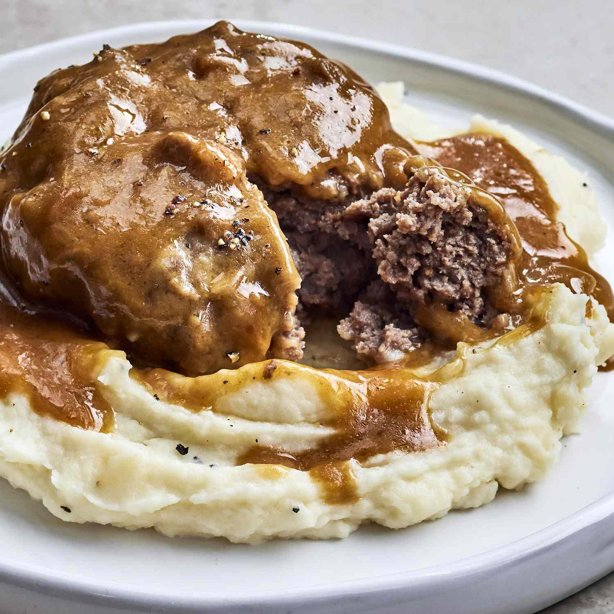

Slow Cooker Salisbury Steak

This Salisbury steak recipe comes together quickly and
does not need a lot of time in the slow cooker.
It's a delicious way to add flavor to ground beef and the children love it!
The gravy is delightful served over mashed potatoes.
Ingredients
- 2 pounds lean ground beef
- half cup Italian seasoned bread crumbs
- a quarter cup milk
- 1 ounce envelope dry onion soup mix
- a quarter cup all-purpose flour
- 2 tablespoons vegetable oil
- 2 cans condensed cream of chicken soup
- three quarter cup water
- 1 packet dry au jus mix